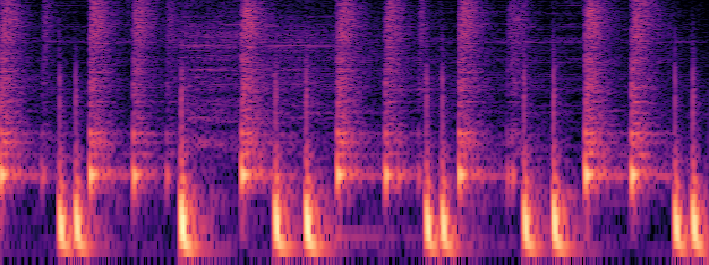
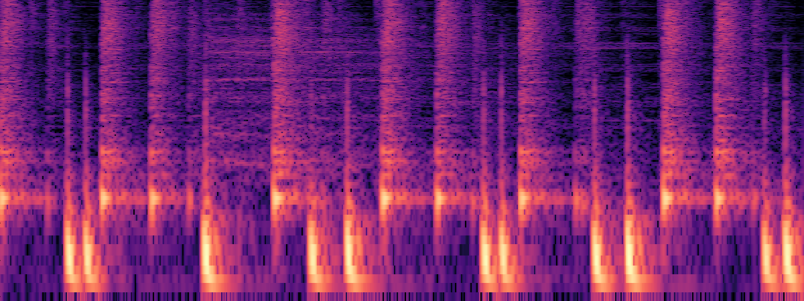
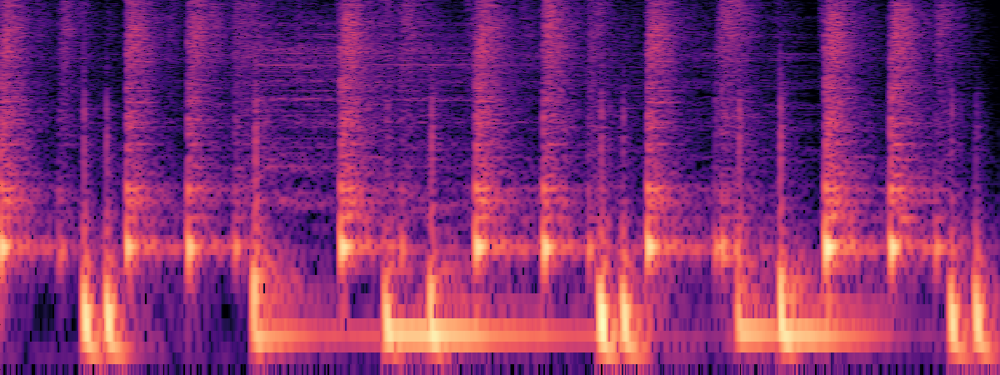

We present MiDiff, a MIDI-conditioned diffusion model for drum audio enhancement that leverages symbolic musical information to guide the denoising process. Our method extends SGMSE by incorporating MIDI conditioning through three complementary strategies: early injection, Feature-wise Linear Modulation (FiLM), and cross-attention within the NCSN++ U-Net architecture. By integrating all three conditioning approaches in a single architecture, MiDiff leverages their complementary strengths to guide the enhancement process. Evaluation on drum audio datasets with (clean, noisy, MIDI) triplets demonstrates improved Fréchet Audio Distance and superior perceptual quality with better preservation of rhythmic structure compared to baseline models.
We investigate three approaches: early injection, FiLM, and cross-attention. Empirical comparisons are in the ablation study.
Early Injection. \([\mathbf{x}_t, \mathbf{y}]\) and MIDI embeddings (from the piano roll via the encoder) are summed before feeding into the U-Net.
FiLM. We employ FiLM layers with scaling/shifting parameters:
\[\gamma_{i,c} = f_c(\mathbf{m}_i), \quad \beta_{i,c} = h_c(\mathbf{m}_i), \quad \text{FiLM}(F_{i,c}|\gamma_{i,c}, \beta_{i,c}) = \gamma_{i,c}F_{i,c} + \beta_{i,c}\]
A single FiLM generator outputs \((\boldsymbol{\gamma}_{i}, \boldsymbol{\beta}_{i})\) from \(\mathbf{m}_i\). FiLM blocks follow each ResNet block, enabling hierarchical modulation. We retained frame-wise FiLM over Temporal FiLM for lower FAD.
Cross-Attention. Spectral features attend to MIDI embeddings as keys/values. A cross-attention block is inserted before every self-attention layer.
MiDiff integrates all three strategies within a single architecture.
Our training dataset consists of triplets containing (clean, noisy, MIDI) samples for drum audio enhancement. The clean audio serves as ground truth, noisy versions simulate realistic degradation scenarios, and MIDI data provides symbolic musical context including note onsets, velocities, and timing information.
This multimodal structure enables the model to learn relationships between symbolic musical information and audio quality, allowing for musically-informed enhancement decisions. The MIDI component serves as a strong conditioning signal, providing explicit knowledge about drum patterns and timing for the enhancement process.
The following samples provide a direct perceptual comparison. The "Clean Original" and "Noisy Input" are provided as references.
To quantitatively evaluate performance, we calculated standard audio quality metrics. The Frechet VGGish Score measures the similarity between distributions of embeddings from the generated audio and the ground truth clean audio. A lower score indicates higher similarity to the clean audio.
Compare the audio outputs of our baseline model and MIDI-conditioned model across different training epochs. Use the interactive tool below to select any two outputs for side-by-side comparison.
Compare Baseline vs. MiDiff (voutputs. Select an audio file to compare side-by-side.


Tip: Use mouse wheel while holding Ctrl to zoom, or scroll horizontally to pan.
To assess the impact of MIDI velocity information on model performance, we conducted an ablation study comparing two variants of our MIDI-conditioned diffusion model: one utilizing full MIDI data including velocity, and another using MIDI data with velocity information removed (i.e., all note velocities set to a constant value).
Select a velocity condition to view its spectrogram and listen. Source: drummer1_1_funk-groove1_138_beat_4-4_bluebird (last 5 seconds).

Tip: Use mouse wheel while holding Ctrl to zoom, or scroll horizontally to pan.
We presented MiDiff, a MIDI-conditioned diffusion model for drum audio enhancement that extends SGMSE by integrating three complementary conditioning strategies: early injection, FiLM, and cross-attention. By incorporating symbolic musical information through a MIDI encoder and combining these approaches within a single architecture, our model makes musically-informed enhancement decisions that preserve rhythmic structure and drum timbre. The results demonstrate improved Fréchet Audio Distance compared to baselines, with perceptual evaluation confirming superior denoising quality. This work validates the effectiveness of multi-strategy MIDI conditioning for audio enhancement and opens promising directions for extending this approach to other instruments, multi-track scenarios, and real-time applications.
@article{anonymous2026midiff,
author = {Anonymous},
title = {MiDiff: MIDI-Conditioned Diffusion Models for Drum Audio Enhancement},
journal = {TBD},
year = {2026},
note = {Author list withheld pending review/de-anonymization},
}